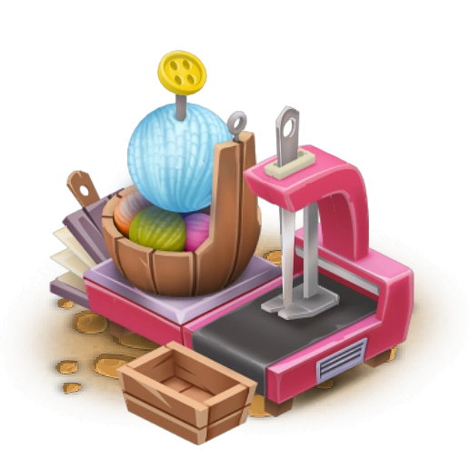

The Sewing Machine is a production building unlocked at experience level 19. It costs 4,500 💰 and takes 20 hours (or 44 💎) to build. It gives players 19 â when completed.
Cotton Shirt
Level 19
⏱ 45 min
âââ 38 min
âââ 38 min
💰 241
â 3
XP 29
â 3
XP 29
Wooly Chaps
Level 21
⏱ 1 h 30 min
âââ 1 h 16 min
âââ 1 h 16 min
💰 309
â 5
XP 37
â 5
XP 37
Violet Dress
Level 25
⏱ 2 h 15 min
âââ 1 h 54 min
âââ 1 h 54 min
💰 327
â 5
XP 39
â 5
XP 39
Soothing Pad
Level 45
⏱ 1 h
âââ 51 min
âââ 51 min
💰 324
â 4
XP 39
â 4
XP 39
Pillow
Level 51
⏱ 3 h
âââ 2 h 33 min
âââ 2 h 33 min
💰 676
â 6
XP 81
â 6
XP 81
Blanket
Level 59
⏱ 3 h 30 min
âââ 2 h 58 min
âââ 2 h 58 min
💰 1098
â 7
XP 131
â 7
XP 131